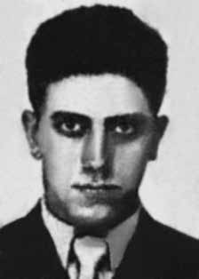

Paulo
Guerra
Tavares
CIRCUNSTÂNCIAS DA MORTE
Paulo foi morto em 29 de maio de 1972, às 7h05min, na esquina da Avenida Sumaré com a Rua Caiubi, em São Paulo. Conforme consta da certidão de óbito registrada em junho do mesmo ano, Paulo morreu em decorrência de “traumatismo crânio encefálico”.
Conforme matéria jornalística publicada na época, quatro indivíduos que transitavam pelas proximidades, em um veículo Volkswagen, desceram do carro e desferiram vários tiros contra a vítima. Levaram seus documentos, mas não o restante de seus pertences, inclusive o dinheiro que portava. Foi amplamente divulgado pela imprensa que, devido às circunstâncias da morte e utilização de documentos falsos, Paulo estaria se dirigindo a uma reunião clandestina.
A versão elaborada pelo Centro de Informações de Segurança da Aeronáutica (CISA) informa que Paulo teria sido morto por companheiros de militância, uma vez que estaria se preparando para abandonar a organização política e entregar-se à Justiça Militar. Em contraposição, o ex-agente do Departamento de Operações de Informações (DOI), Marival Chaves, em correspondência enviada a Cecília Coimbra, do Grupo Tortura Nunca Mais (RJ), afirma que Paulo teria sido atraído por membros do Exército para uma emboscada para que fosse assassinado em “razão da sua condição de ex-sargento do Exército, já que o aparelho repressivo era enfático quando afirmava que assim agia para que a eliminação sumária do oposicionista político servisse como exemplo, evitando assim eventuais dissensões”.
A CEMDP, fundamentada em documentos que recebeu da família de Paulo, considerou que sua morte não foi decorrente da prática de um crime de latrocínio, suspeita levantada à época, mas ocasionada por motivação política, no auge da repressão política no Brasil. Logo após a morte, a partir dos documentos encontrados, a polícia de São Paulo contatou o irmão de Paulo, Isaac Tavares Dias, que reconheceu seu corpo. O sepultamento ocorreu no Cemitério São Pedro, em São Paulo, em 3 de junho de 1972.
Paulo was killed on May 29, 1972, at 7:05 am, on the corner of Avenida Sumaré and Rua Caiubi, in São Paulo. As stated in the death certificate registered in June of the same year, Paulo died as a result of “traumatic brain injury”.
According to a journalistic article published at the time, four individuals who were driving nearby, in a Volkswagen vehicle, got out of the car and fired several shots at the victim. They took his documents, but not the rest of his belongings, including the money he carried. It was widely reported in the press that, due to the circumstances of the death and the use of false documents, Paulo was heading to a clandestine meeting.
The version prepared by the Air Force Security Information Center (CISA) states that Paulo would have been killed by fellow militants, as he was preparing to abandon the political organization and hand himself over to Military Justice. In contrast, the former agent of the Department of Information Operations (DOI), Marival Chaves, in correspondence sent to Cecília Coimbra, from the Tortura Nunca Mais Group (RJ), states that Paulo had been lured by members of the Army into an ambush so that he could be murdered “because of his status as a former Army sergeant, since the repressive apparatus was emphatic when it stated that it acted in this way so that the summary elimination of the political oppositionist would serve as an example, thus avoiding possible dissensions”.
CEMDP, based on documents it received from Paulo's family, considered that his death was not the result of the crime of robbery, a suspicion raised at the time, but caused by political motivation, at the height of political repression in Brazil. Shortly after the death, based on the documents found, the São Paulo police contacted Paulo's brother, Isaac Tavares Dias, who recognized his body. The burial took place at Cemitério São Pedro, in São Paulo, on June 3, 1972.
Paulo fue asesinado el 29 de mayo de 1972, a las 7:05 horas, en la esquina de la Avenida Sumaré y la Rua Caiubi, en São Paulo. Según consta en el certificado de defunción registrado en junio del mismo año, Paulo murió a consecuencia de un “lesión cerebral traumática”.
Según un artículo periodístico publicado en ese momento, cuatro sujetos que circulaban cerca, en un vehículo Volkswagen, descendieron del vehículo y dispararon varios tiros en contra de la víctima. Se llevaron sus documentos, pero no el resto de sus pertenencias, incluido el dinero que llevaba. La prensa informó ampliamente que, debido a las circunstancias de la muerte y al uso de documentos falsos, Paulo se dirigía a una reunión clandestina.
La versión elaborada por el Centro de Información de Seguridad de la Fuerza Aérea (CISA) afirma que Paulo habría sido asesinado por compañeros militantes, mientras se disponía a abandonar la organización política y entregarse a la Justicia Militar. En cambio, el ex agente del Departamento de Operaciones de Información (DOI), Marival Chaves, en correspondencia enviada a Cecília Coimbra, del Grupo Tortura Nunca Mais (RJ), afirma que Paulo había sido atraído por miembros del Ejército a una emboscada para asesinarlo “por su condición de ex sargento del Ejército, ya que el aparato represivo fue enfático al afirmar que actuaba de esa manera para que la eliminación sumaria del opositor político sirviera de ejemplo, evitando así posibles disensiones”.
El CEMDP, basándose en documentos recibidos de la familia de Paulo, consideró que su muerte no fue consecuencia del delito de robo, sospecha levantada en ese momento, sino provocada por una motivación política, en el momento de mayor represión política en Brasil. Poco después de la muerte, a partir de los documentos encontrados, la policía de São Paulo se puso en contacto con el hermano de Paulo, Isaac Tavares Dias, quien reconoció su cuerpo. El entierro tuvo lugar en el Cemitério São Pedro, en São Paulo, el 3 de junio de 1972.